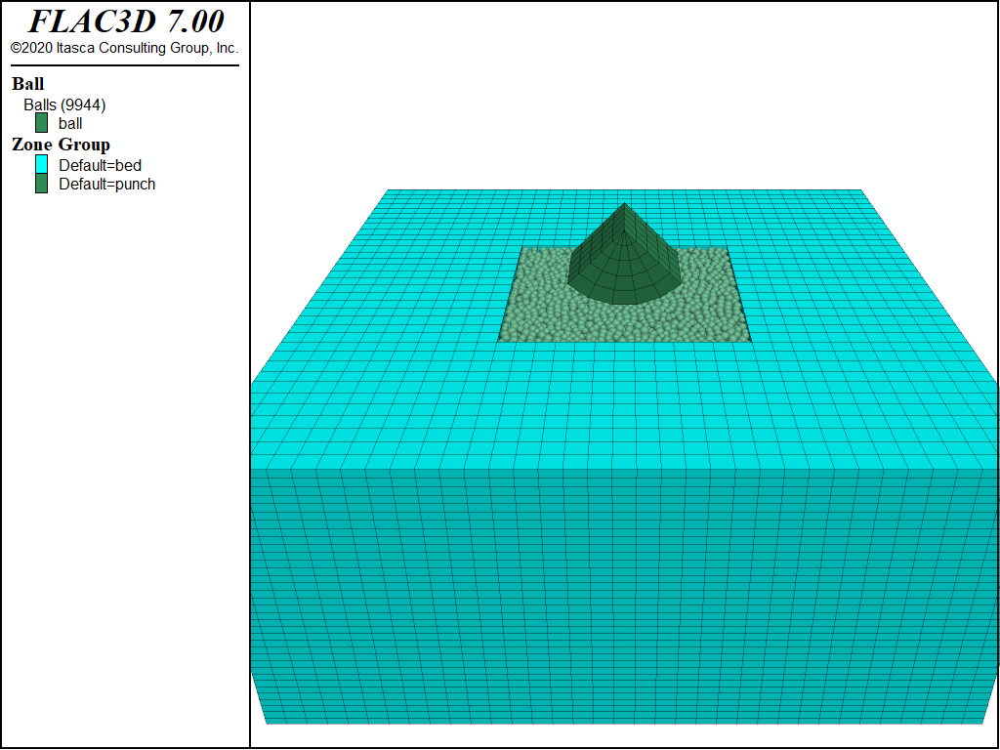
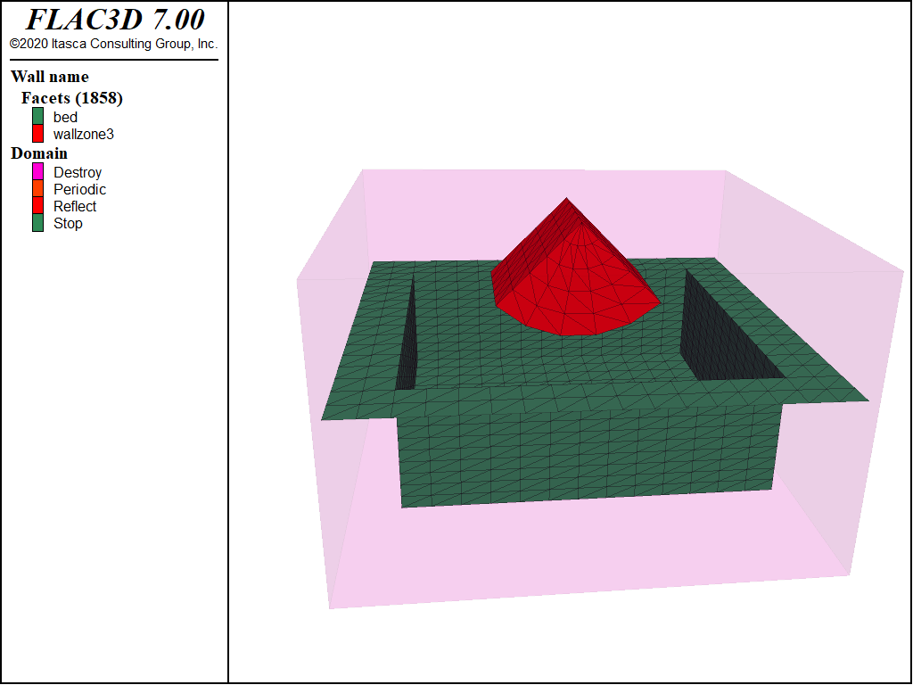
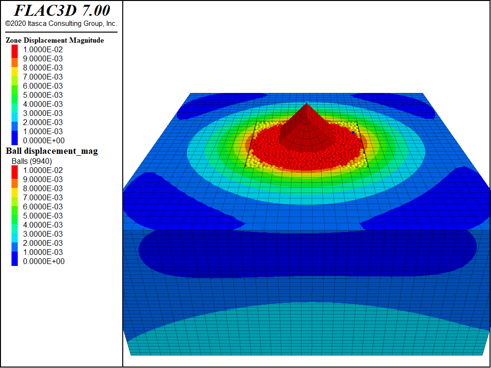
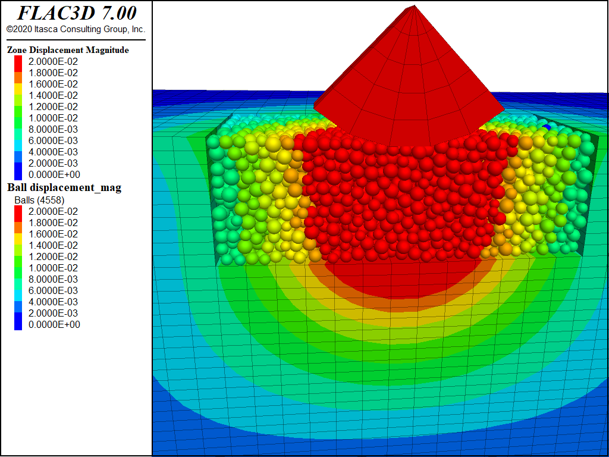
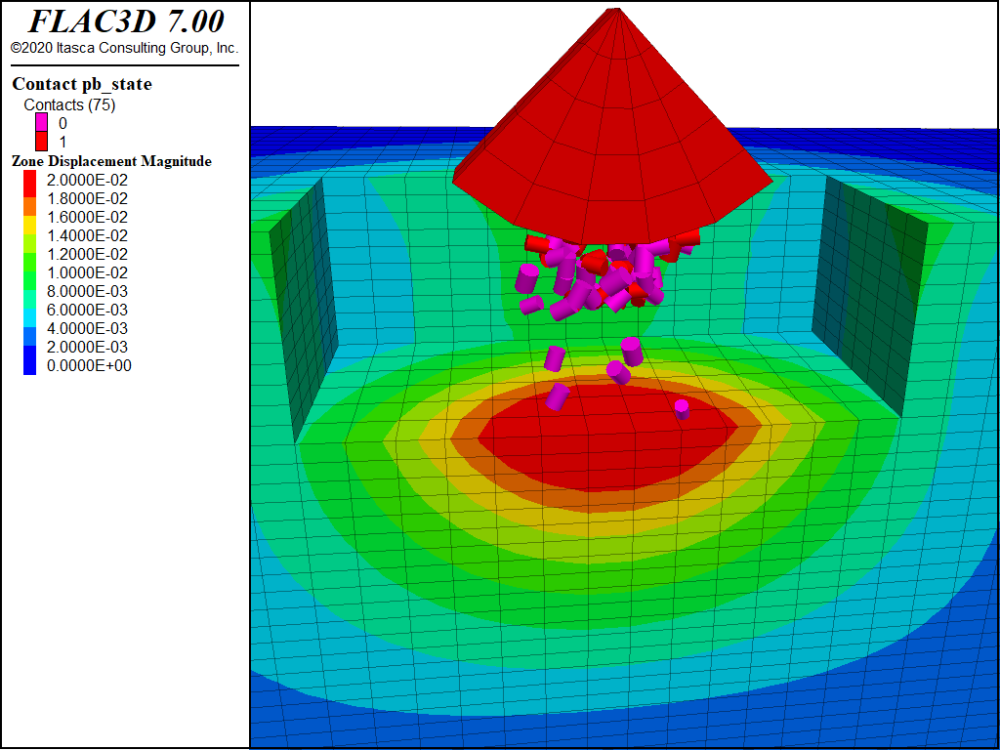
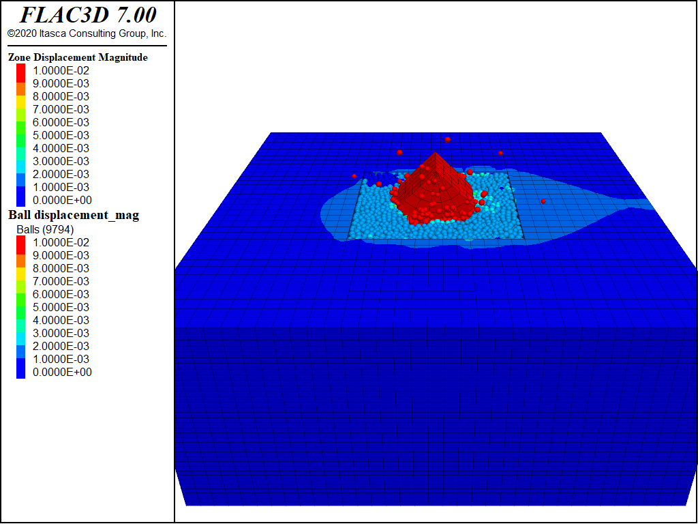
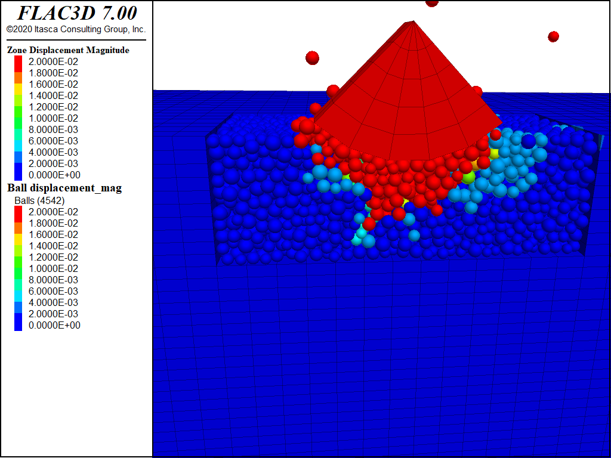
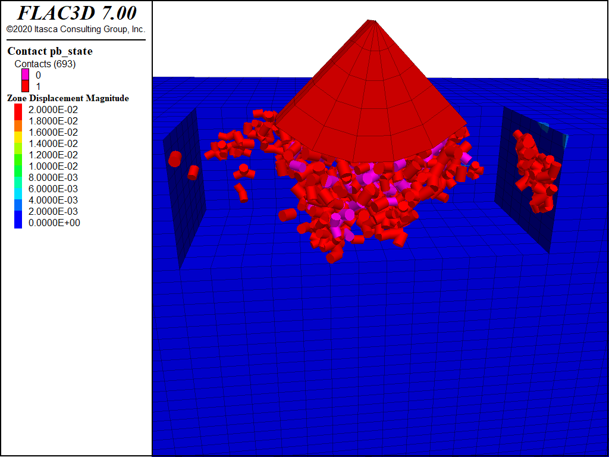
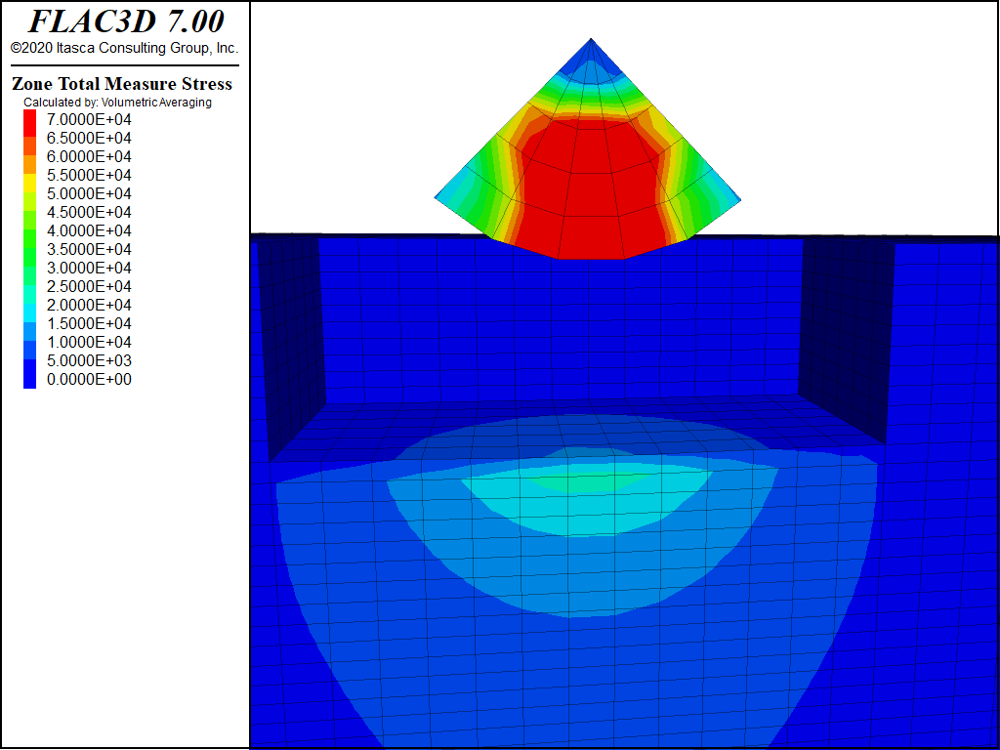
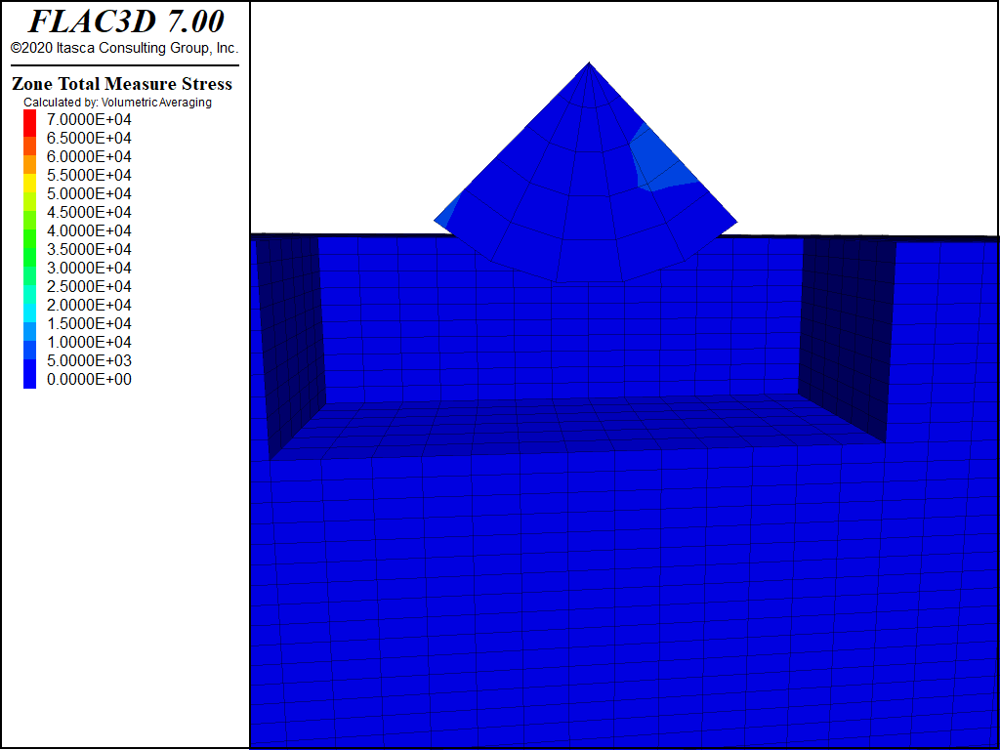

黏结材料的冲头压入
问题描述
注意
要在程序中查看本项目，请使用菜单命令 。选择“工程应用算例/PunchIndentation”，再选择“PunchIndentation.f3prj”以载入。 所用的主数据文件（main data files）见本算例末尾。其余数据文件可在项目中找到。
本算例演示黏结颗粒模型（BPM）在被圆形冲头压缩时的压入响应。采用 PFC 研究此类模型时需要：1）使用规模较大的 PFC 球体集合，以确保远离压入位置处的材料响应真实；2）用 PFC 墙体表示冲头本体。由于冲头压入区域之外需要大量球体，这种做法计算开销较大。此外，由于墙体只能作为刚性边界，因此无法在 PFC 中评估冲头的应力／变形。
图 1（Figure 1）给出模型几何形状。将一片区域的网格单元设为空单元，并在该区域内生成 BPM。虽然 BPM 区域较小且球体尺寸较大，但本算例仍有效演示了 PFC 与 FLAC3D 模型的耦合机理。如墙-网格单元耦合方案（Wall-Zone Coupling Scheme）一节所述，PFC 墙体从属于表面网格单元。图 2（Figure 2）给出 PFC 墙体以及容纳全部 PFC 模型组件的模型域。接触存在于 PFC 球体与墙体面之间；每个球体-墙体面接触处的接触力和力矩用于确定等效力系，并施加到对应的网格单元网格点。


图 1：在网格单元空腔内生成 BPM 后 PFC 球体与 FLAC3D 网格单元的几何形状。


图 2：PFC 墙体，由 wall-zone create 命令创建。
耦合 PFC-FLAC3D 模型
在创建耦合 PFC-FLAC3D 模型之前，必须先加载 PFC 模块。这些模块是 包含用于实例化所有 PFC 相关模型组件的代码的 DLL。此外，还有一组模块用于将 PFC 墙与 FLAC3D 网格单元和基于壳的结构单元耦合。默认情况下，打开 FLAC3D 应用程序时不加载这些模块。可通过 菜单项或以下命令加载这些模块：
program load module 'contact'
program load module 'pfc'
program load guimodule 'pfc'
program load module 'pfcthermal'
program load guimodule 'pfcthermal'
program load module 'ccfd'
program load guimodule 'ccfd'
program load module 'wallsel'
program load module 'wallzone'
项目在加载任何附加模块后保存一次后，再次打开该项目时将自动加载这些模块。请注意，附加模块会保持加载状态，直到关闭 FLAC3D 应用程序。
PFC 球体在设为空单元的 FLAC3D 网格单元区域内生成。为使每次运行数据文件时都生成相同的初始球体云，采用 设置随机数种子命令（model random） 命令将随机种子初始化为指定值。改变随机种子会得到不同的球体实现，但从统计意义上讲，各实现是相同的。与网格单元和结构单元不同，所有 PFC 模型组件（即球体、刚性簇、墙体和接触）只能存在于用户指定的模型域内（见 设置模型域命令（model domain） 命令）。这一限制使接触检测和空间搜索得以简化和优化。由于 PFC 始终以大应变模式运行，必须为网格单元和结构单元显式激活大应变模式（见 设置大变形模式命令（model large-strain） 命令）。PFC 默认使用球体和刚性簇的真实惯性特性求解动力运动方程。在本模型中，我们希望 PFC 采用时间步缩放方式运行（见 设置力学分析参数命令（model mechanical） 命令），该方式与 FLAC3D 的默认行为相似。
完成这些准备步骤后，我们开始创建初始模型。
;创建网格单元底座供球体置于其中
zone create brick size 35 35 35 point 0 -4 -4 -4.5 point 1 4 -4 -4.5 ...
point 2 -4 4 -4.5 point 3 -4 -4 -1 group 'bed'
zone cmodel assign elastic
zone property young [materialMod] poisson 0.25
zone cmodel null ...
range position-x -1.5 1.5 position-y -1.5 1.5 position-z -2 -1
;在球体充填该区域的过程中 -
;在球体沉降时固定网格点运动
zone gridpoint fix velocity
;用墙体包裹底座
wall-zone create name 'bed' starting-zone 30013
;在顶部创建一道墙
wall generate name 'top' plane position 0 0 -1
;生成任意重叠的球体集合
ball distribute porosity 0.4 box -1.5 1.5 -1.5 1.5 -2 -1 radius 0.04 0.06
;设置球体密度与局部阻尼系数
ball attribute density 2600 damp 0.7
;设置默认接触行为 -
;deformability 法用于设置接触模型
;线性部分的参数
contact cmat default model linearpbond method deformability ...
emod [materialMod] kratio 1.0
;允许球体重新排列，并将线速度
;与角速度每 100 个循环清零
model cycle 1000 calm 100
;删除飞出底座的球体
ball delete range position -1.5 -1.5 -2 1.5 1.5 -1 not
采用 zone create 命令创建简单的网格单元层，并将 BPM 将占据的区域设为空单元。由于生成的球体存在任意重叠，在球体重新排列期间固定所有网格点速度。采用 wall-zone create 命令将墙体面包裹在表面网格单元面上。如图 2（Figure 2）所示，墙体不超出模型域。另采用 wall generate 命令创建一面额外的墙体以封闭空腔。
PFC 球体和刚性簇既可以在无初始重叠的情况下生成，也可以在存在任意初始重叠的情况下生成。在本例中，采用 ball distribute 命令在平行六面体体积内按指定体积分数生成存在任意重叠的球体云。随后为球体赋予属性，并使用 contact cmat 命令指定接触模型行为。完成这些步骤后，即可允许球体重新排列。calm 关键字（位于 执行计算时步（model cycle） 命令中）用于定期从系统中移除全部动能。最后，删除所有已逸出生成区域的球体。
至此，颗粒材料已转换为 BPM。
;按指定间隙将球体黏结在一起
contact method bond gap 2.0e-3
;通过 pb_deform 法设置平行黏结参数
contact method pb_deform emod [materialMod] kratio 1.0
;移除接触参数中的线性部分
;并设置接触强度
;该材料强度相对较低
contact property lin_mode 1 pb_ten 2e4 pb_coh 2e5 ...
range contact type 'ball-ball'
;将球-面片接触强度设得很高
contact property lin_mode 1 pb_ten 1e100 pb_coh 1e100 ...
range contact type 'ball-facet'
;移除盒子
wall delete wall range name 'top'
;设置新建球-球与球-面片接触的默认行为
contact cmat default model linear type ball-ball method deformability ...
emod [materialMod] kratio 1.0 property fric 0.3
contact cmat default model linear type ball-facet method deformability ...
emod [materialMod] kratio 1.0 property fric 0.3
;清除所有速度，固定球体，
;循环 2 步，以清除先前由
;简单堆积过程产生的接触力
model calm
ball fix velocity spin
ball attribute force-contact multiply 0.0
contact property lin_force 0 0 0
model cycle 2
ball free velocity spin
采用 contact method 命令安装平行黏结。此外，还通过同一命令设置平行黏结属性。接触方法是对接触执行某项任务的一组操作，可能会修改多个接触属性。在本例中，pb_deform 方法设置 线性平行黏结（linear
parallel bond） 接触模型的 pb_kn 和 pb_ks 属性。同时为球体-球体接触和球体-墙体面接触赋予平行黏结强度。需要特别注意的是，球体-墙体面平行黏结强度被设为很大的值，以确保边界处的球体与其相邻网格单元保持黏结。指定 lin_mode = 1 表示对该 BPM 而言，所有力均按增量累积；在此命令之前，力是由球体-球体接触和球体-墙体面接触的绝对重叠量产生的。这样即可快速生成无内部应力的 BPM。为此，将球体速度和自转清零并固定，使若干个计算循环内不产生新的接触力。此外还必须将接触模型中存储的接触力设为 0。由此，BPM 处于无内部应力的平衡状态。
至此建模阶段，已在较大 FLAC3D 模型的空腔内生成无应力的 BPM。部分球体与对应于自由网格单元面的墙体面黏结。这些接触处产生的力／力矩会自动传递到相关联的网格单元网格点，使 BPM 与连续体模型能够自然相互作用。
结果与讨论
开始循环后，球体在冲头所施加压力的作用下开始位移。冲头压入指定距离，随后将模型求解至指定的平均比率。图 3（Figure 3）和 图 4（Figure 4）分别给出球体和网格单元的表面位移与横截面位移。可见 BPM 区域与连续体区域之间的位移是连续的。此外，由于断裂的黏结很少，BPM 的行为与连续体相似，因此位移场呈对称分布。图 5（Figure 5）给出模拟至此已断裂的少数黏结所在位置。


图 3：BPM 发生大规模破坏前球体和网格单元的表面位移。


图 4：BPM 发生大规模破坏前球体和网格单元位移的横截面。


图 5：BPM 发生大规模破坏前已断裂的黏结。
随后，冲头再向 BPM 内压入一段距离。 图 6（Figure 6）和 图 7（Figure 7）分别给出冲头进一步移动后的表面位移与横截面位移。与上文所示位移相比，冲头继续压入时，远离冲头处的位移明显减小。图 8（Figure 8）给出冲头进一步压入时已断裂黏结的位置。此时，整体 BPM 已发生破坏，并伴随局部黏结断裂。因此，球体重新排列，远离压入位置处的位移显著减小。


图 6：BPM 发生大规模破坏后球体和网格单元的表面位移。


图 7：BPM 发生大规模破坏后球体和网格单元位移的横截面。


图 8：BPM 发生大规模破坏后已断裂的黏结。
破坏后不仅位移会发生显著变化，冲头中的应力也显著降低。图 9（Figure 9）和 图 10（Figure 10）分别给出整体破坏前、后量测的总应力。此时 BPM 抵抗压入的能力已明显降低。


图 9：BPM 发生大规模破坏前量测的总应力。


图 10：BPM 发生大规模破坏后量测的总应力。
数据文件
PunchIndentation.dat
;-------------------------------------------------------------------
; 黏结材料的冲压
; 三轴试验
;-------------------------------------------------------------------
model new
model title 'Punch Indentation of a Bonded Material'
;通过设置随机数种子使结果可重复
model random 10001
;设置 PFC 球体与墙体的模型域
model domain extent -2 2 -2 2 -2.5 0 condition destroy
;耦合模拟中必须始终开启大应变模式
model large-strain on
;施加时间步缩放，使 PFC 时间步为 1
model mechanical timestep scale
;定义 DEM 材料的等效模量 -
; 并将其同时作为底座网格单元的杨氏模量
[materialMod = 1.0e6]
;定义构成冲头的网格单元的杨氏模量
[punchYoung = 1.0e7]
;创建网格单元底座供球体置于其中
zone create brick size 35 35 35 point 0 -4 -4 -4.5 point 1 4 -4 -4.5 ...
point 2 -4 4 -4.5 point 3 -4 -4 -1 group 'bed'
zone cmodel assign elastic
zone property young [materialMod] poisson 0.25
zone cmodel null ...
range position-x -1.5 1.5 position-y -1.5 1.5 position-z -2 -1
;在球体充填该区域的过程中 -
;在球体沉降时固定网格点运动
zone gridpoint fix velocity
;用墙体包裹底座
wall-zone create name 'bed' starting-zone 30013
;在顶部创建一道墙
wall generate name 'top' plane position 0 0 -1
;生成任意重叠的球体集合
ball distribute porosity 0.4 box -1.5 1.5 -1.5 1.5 -2 -1 radius 0.04 0.06
;设置球体密度与局部阻尼系数
ball attribute density 2600 damp 0.7
;设置默认接触行为 -
;deformability 法用于设置接触模型
;线性部分的参数
contact cmat default model linearpbond method deformability ...
emod [materialMod] kratio 1.0
;允许球体重新排列，并将线速度
;与角速度每 100 个循环清零
model cycle 1000 calm 100
;删除飞出底座的球体
ball delete range position -1.5 -1.5 -2 1.5 1.5 -1 not
;按指定间隙将球体黏结在一起
contact method bond gap 2.0e-3
;通过 pb_deform 法设置平行黏结参数
contact method pb_deform emod [materialMod] kratio 1.0
;移除接触参数中的线性部分
;并设置接触强度
;该材料强度相对较低
contact property lin_mode 1 pb_ten 2e4 pb_coh 2e5 ...
range contact type 'ball-ball'
;将球-面片接触强度设得很高
contact property lin_mode 1 pb_ten 1e100 pb_coh 1e100 ...
range contact type 'ball-facet'
;移除盒子
wall delete wall range name 'top'
;设置新建球-球与球-面片接触的默认行为
contact cmat default model linear type ball-ball method deformability ...
emod [materialMod] kratio 1.0 property fric 0.3
contact cmat default model linear type ball-facet method deformability ...
emod [materialMod] kratio 1.0 property fric 0.3
;清除所有速度，固定球体，
;循环 2 步，以清除先前由
;简单堆积过程产生的接触力
model calm
ball fix velocity spin
ball attribute force-contact multiply 0.0
contact property lin_force 0 0 0
model cycle 2
ball free velocity spin
;固定模型底部网格单元 z 方向速度
zone gridpoint free velocity
zone gridpoint fix velocity-z range position-z -5 -4.4
;重置球体位移
ball attribute displacement multiply 0.0
model save 'withoutPunch'
;创建圆角冲头并为其赋参数
zone create cylinder point 0 0 -0.5 0 ...
point 1 [-math.sqrt(2.0)/2.0] -0.5 [-math.sqrt(2.0)/2.0] ...
point 2 0 0.5 0 ...
point 3 [math.sqrt(2.0)/2.0] -0.5 [-math.sqrt(2.0)/2.0] ...
size 5 5 5 group 'punch'
zone cmodel assign elastic range group 'punch'
zone property young [punchYoung] poisson 0.25 range group 'punch'
;用墙体包裹冲头
wall-zone create range group 'punch'
;为冲头顶部的网格点指定组并固定 z 方向速度
zone gridpoint group "fixed" range position-z -0.4 1
zone gridpoint fix velocity-z -.0001 range group "fixed"
model save 'withPunch'
;将冲头压入球体，仅使材料发生轻微破坏
model cycle 1000
zone gridpoint fix velocity-z 0.0 range group "fixed"
;求解至平衡状态以显示当前位移
model solve ratio-average 1.0e-4
model save 'beforeFailure'
;压入冲头并观察网格单元位移
;在破坏开始后减小
zone gridpoint fix velocity-z -.0001 range group "fixed"
model cycle 1000
zone gridpoint fix velocity-z 0.0 range group "fixed"
;破坏将持续，颗粒试样将重新排列，
;使位移减小
model solve ratio-average 1.0e-3
model save 'afterFailure'
| 这些内容对您有帮助吗？… | FLAC3D © 2019, Itasca | 原文更新于 2020 年 10 月 8 日 |
| 版权与免责声明 | ||